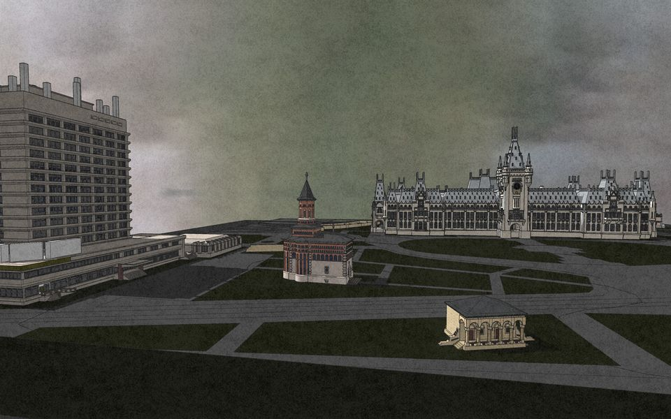

Environment · 3D reconstruction · 3D printing
The Moldavian Princely Court of Iași
Five evolutionary stages of the Princely Court of Iași, rebuilt in 3D from historical research and printed as physical models for an exhibition at the Palace of Culture.